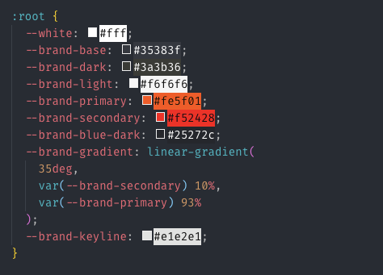

Vad är en regel i CSS och vad består den av?
Svar: Man börjar med den första selektorn. Den använder man för att bestämma vilka element som ska formateras men även också hur de ska formeteras genom de olika värdena som man skriver för olika egenskaper. Den består av egenskaperna värdena och selektorn.
Vad menas med kaskad i CSS?
Svar:Man har flera stilmallar som tillämpas på själva html dokumentet och kaskad innebär taggen eller den process som man använder för att välja vilken stilmall som gäller för just detta html dokument.
Wood,Rob (2019-01-15) How to theme with CSS variables. Hämtad från https://www.browserlondon.com/blog/2019/01/15/css-variables-theming/